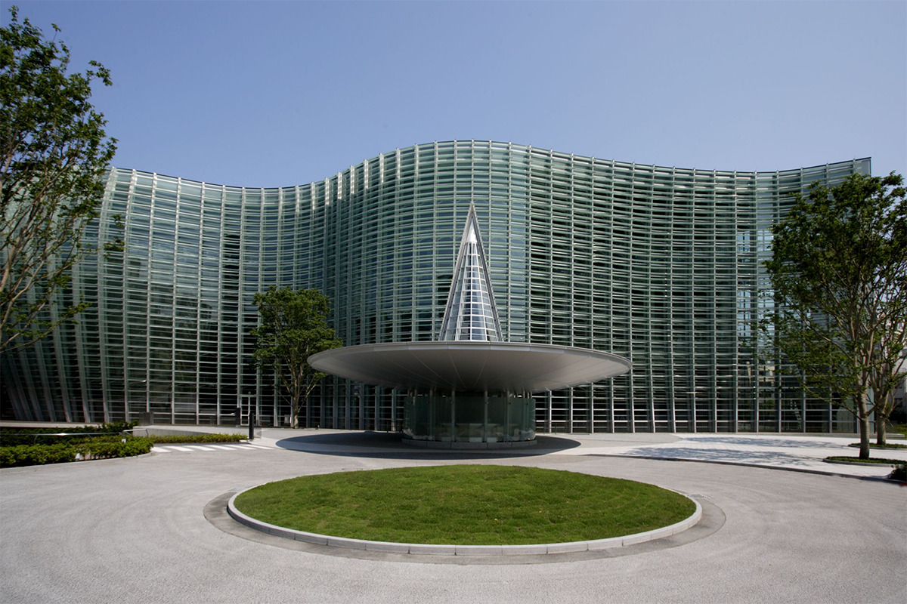
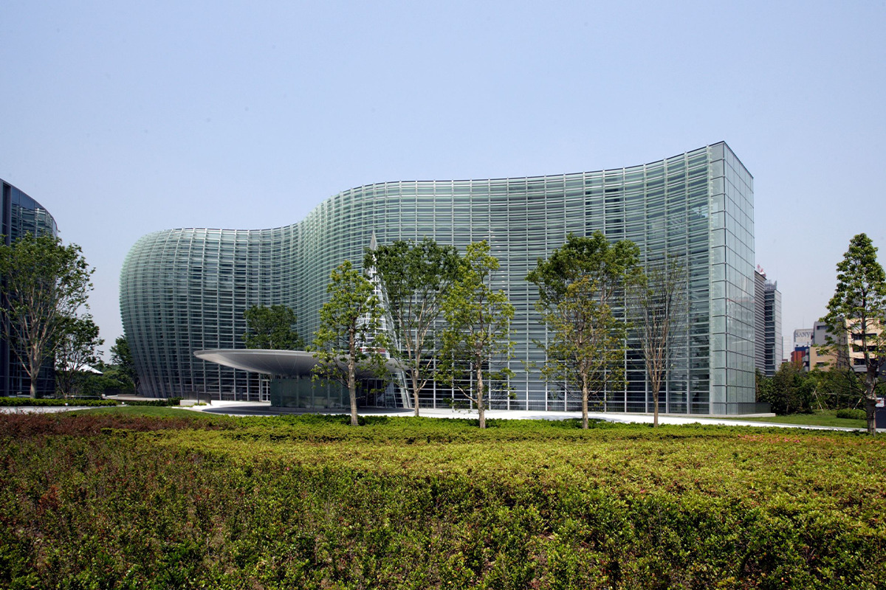
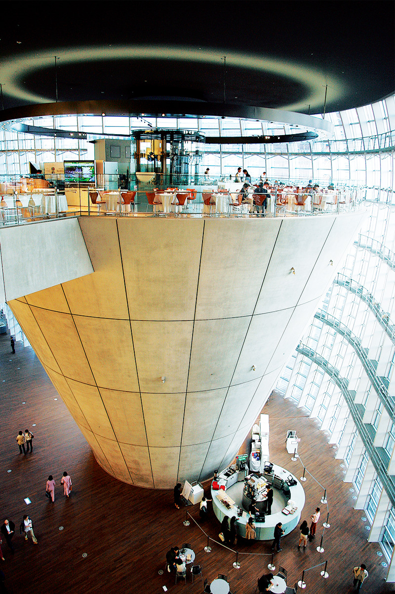
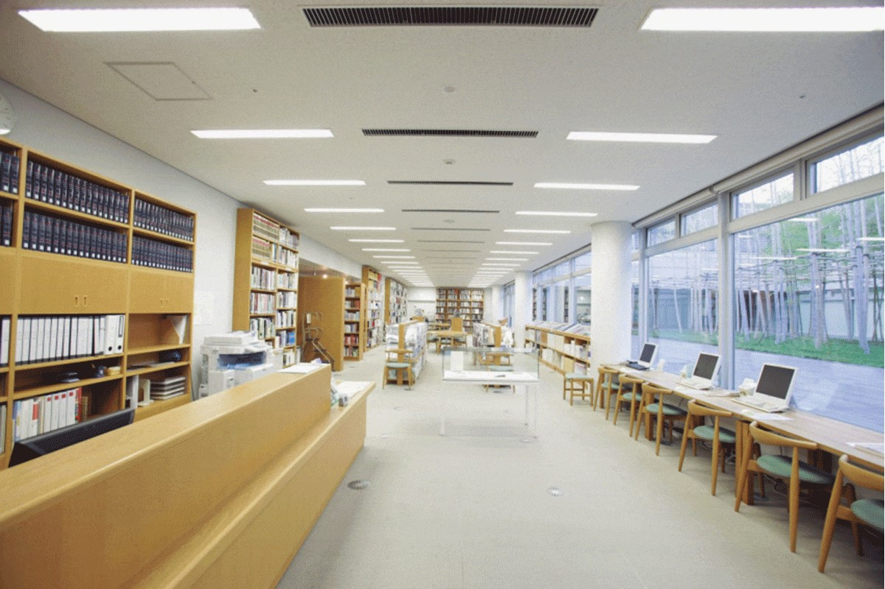
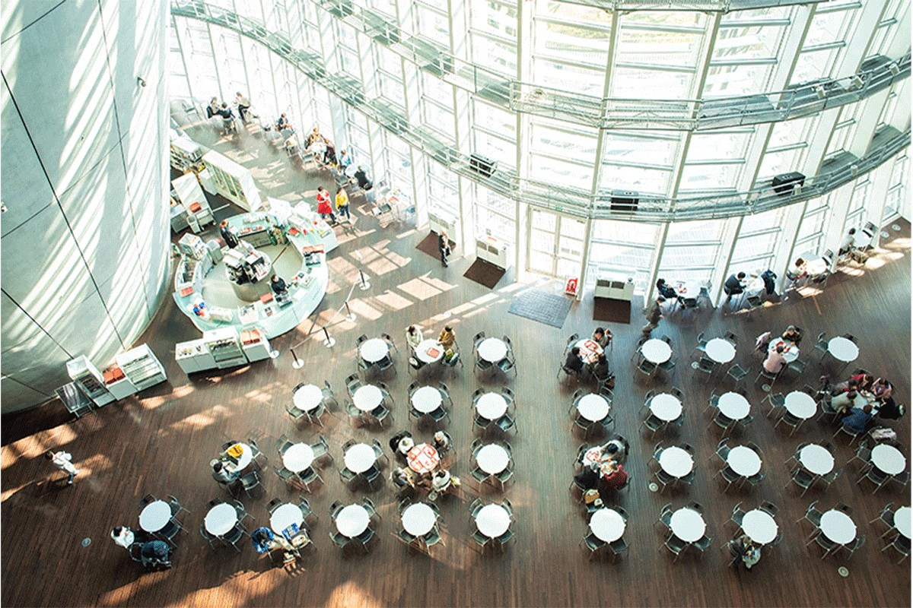
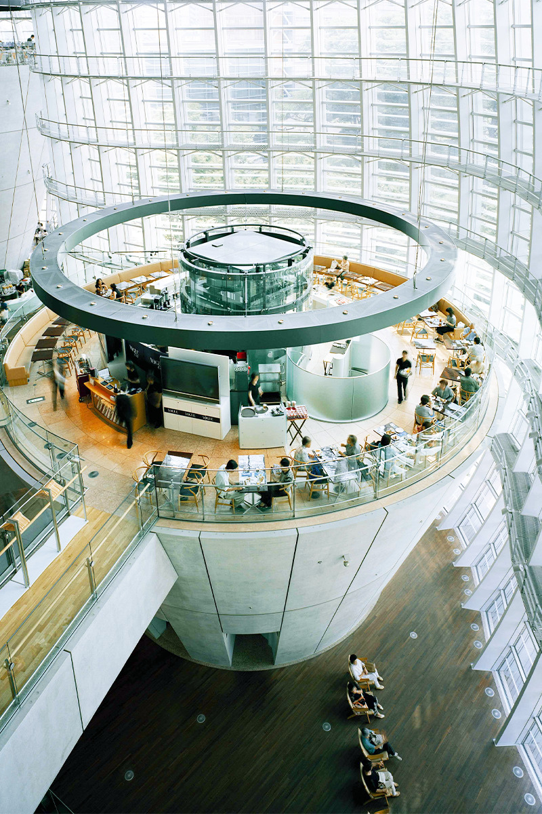
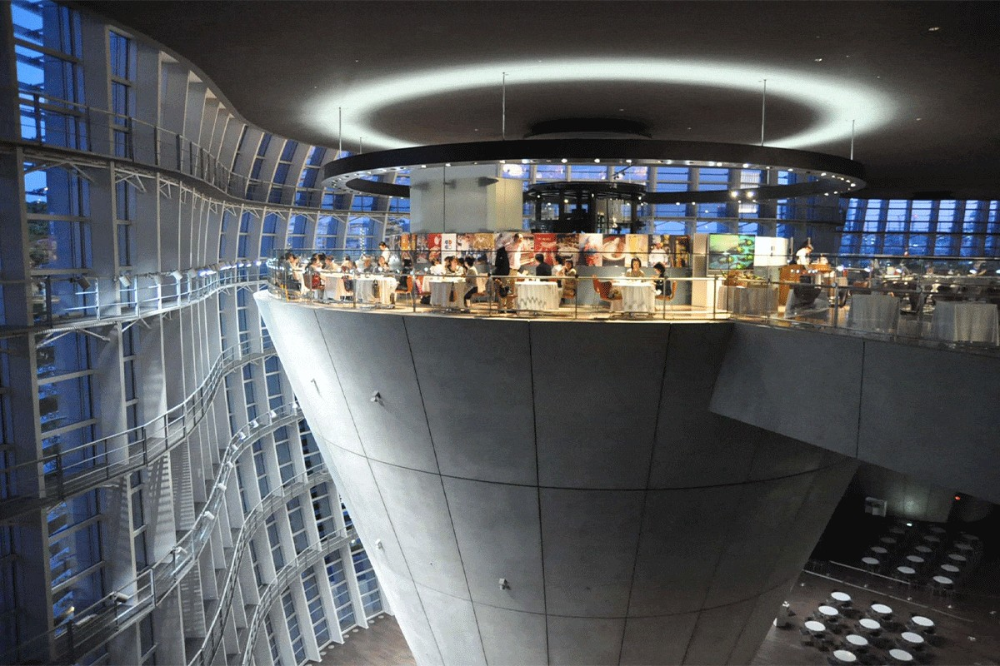
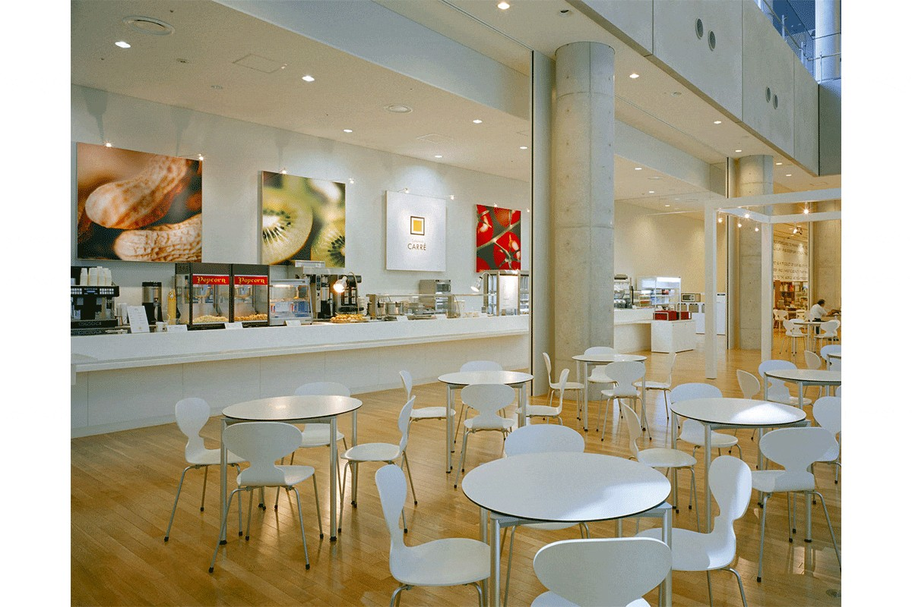

Токио · Роппонги · музей
Национальный центр искусств в Роппонги: музей без коллекции под стеклянной волной Кисё Курокавы

Национальный центр искусств в Роппонги сознательно обходится без собственной коллекции. Вместо того чтобы собирать шедевры, он отдаёт свои огромные залы выставкам и хочет, чтобы люди чаще встречались с искусством.
Музей
Залы вместо коллекции
Национальный центр искусств открылся в 2007 году как музей нового типа: с самого начала он решил не иметь постоянной коллекции. Зато у него 14 000 квадратных метров выставочной площади, одна из самых больших в Японии.
Эти залы работают на разные задачи. Музей устраивает собственные выставки, в том числе такие, где ищет новые формы искусства, проводит крупные выставки вместе с газетами и другими партнёрами и предоставляет залы художественным объединениям для их ежегодных смотров.

Ещё одна задача музея состоит в том, чтобы собирать и открывать для всех сведения и материалы об искусстве. Особенно богато здешнее собрание каталогов выставок, прошедших в Японии: по их количеству музей входит в ряд крупнейших в стране. Для детей и взрослых здесь проводят мастер-классы и лекции. Идея проста: музей не столько показывает собранные шедевры, сколько служит местом, где человек и искусство находят друг друга.
Архитектура
Стеклянная волна и два бетонных конуса
Привлекает и само здание. Его спроектировал Кисё Курокава (1934–2007), один из самых известных японских архитекторов XX века. Стеклянная стена изгибается, как волна, а в атриуме высотой 21,6 метра стоят два огромных бетонных конуса, перевёрнутых вершиной вниз. Архитектор продумал множество деталей и вложил в них немало игры, чтобы само пространство музея воспринималось как произведение искусства.

Логотип музея придумал Касива Сато, один из ведущих креативных директоров Японии: в нём заложено пожелание, чтобы музей всегда оставался открытым местом.
С марта 2020 года у музея есть веб-приложение CONIC, посвящённое зданию, которое спроектировали Кисё Курокава и бюро Nihon Sekkei. На смартфоне можно читать или слушать пояснения к главным архитектурным деталям и пройти по зданию одним из предложенных маршрутов. Приложение работает на японском, английском, китайском и корейском языках. Оно открывается в браузере, а если добавить его на главный экран телефона, им можно пользоваться в любой момент.
Библиотека
Каталоги выставок в открытом доступе
В музее есть библиотека искусства, где хранятся каталоги выставок, книги и журналы об искусстве. На дом книги не выдают, но читать можно бесплатно, и прийти сюда может любой.

Читальный зал находится на третьем этаже музея. В 2026 году он открыт по понедельникам, средам, четвергам, пятницам, субботам, воскресеньям и в праздники с 11:00 до 17:00.
Еда
Ресторан и три кафе
В музее один ресторан и три кафе, и у каждого французское название, которое объясняет его характер.
Café Coquille на первом этаже стоит у самой стеклянной стены, которая изгибается, как раковина («кокий» по-французски). Над ней атриум высотой около 21 метра, а перед ней терраса, так что здесь легко и просторно. Это удобное место для встречи.

Salon de Thé Rond на втором этаже занимает самый верх огромного перевёрнутого конуса. Это круглый («ронд» по-французски) зал, куда приходят после выставки выпить чаю и поговорить.

На третьем этаже работает Brasserie Paul Bocuse Le Musée. Поль Бокюз (1926–2018) был одним из самых известных французских поваров XX века, и здесь его классическую французскую кухню подают в непринуждённой обстановке брассери. Есть недорогие обеды из нескольких блюд и блюда по меню, а особенно популярны блюда, придуманные к выставкам. Ресторан открыт и после закрытия музея.

На подземном этаже находится Cafétéria Carré. Это просторный квадратный («карре» по-французски) зал, куда можно зайти в любое время. В меню много блюд для любого возраста, так что сюда удобно приходить с семьёй.

Национальный центр искусств
- Адрес
- Токио, Минато, Роппонги, 7-22-2
- Телефон
- +81 3-5777-8600 (справочная служба)
- Часы работы
- 10:00–18:00 (вход до 17:30)
- Выходные
- вторник (если это праздник, то следующий будний день), новогодние праздники
- Цены / Вход
- вход в здание бесплатный, билеты на выставки стоят по-разному
- Как добраться
- выход 6 станции Ногидзака линии метро Тиёда ведёт прямо в музей; от выхода 4a станции Роппонги линии метро Хибия около 5 минут пешком. Парковки нет.
- Сайт
- nact.jp
Фото: Национальный центр искусств.